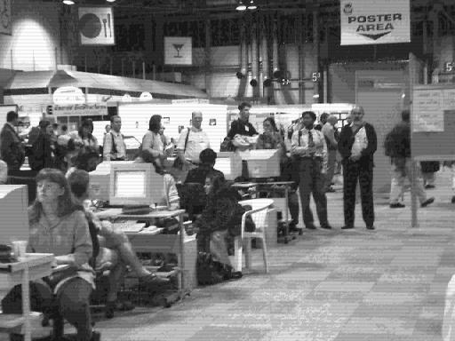
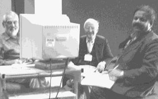
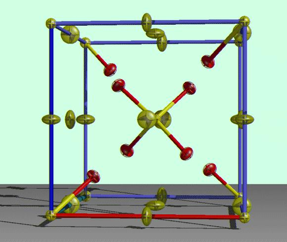

Pages in this file are :
Report on the IUCr XVIII Glasgow 1999 Software Fayre
Throughout the entire IUCr XVIII in Glasgow, a Software Fayre was held to allow both software authors and users to interact with the various freely available packages useful to Crystallographers. Thanks to the generosity and helpfulness of the organising committee, SGI and Compaq; especially Chris Gilmore, Stuart Mackay and David Thom, the Fayre had access to 3 Silicon Graphics O2s, 7 Compaq PCs (2 running Redhat Linux. 5 running Window95); as well as an overhead computer projector for demonstrating software to larger crowds. Software was installed off CD-ROMs since the computers could not be connected to the Internet for download of software and patches.

As the long queue on the Internet Cafe turned many a calm crystallographer
into a rampaging desperado needing an Internet fix;
the lack of
Internet access for the Software Fayre computers actually allowed a wide
range of crystallographic software to be demonstrated.
(photo taken by Lachlan Cranswick shows part of the queue at the
Internet Cafe in the Exhibition area )
Small Molecule Single Crystal Software:
A healthy variety of available small molecule single crystal solution and refinement software was presented at the Fayre. These include: John Gallager demonstrating the ORTEX for Windows single crystal suite (based around Shelx for solution and refinement) (1) ( Click here for list of referneces with live links) ; Syd Hall and Brian Skelton, the XTAL single crystal solution and refinement suite running on UNIX and Windows(2); Paul Mallinson and Thomas Richter, the "Project XD" Charge Density Software(3); David Watkin and Richard Cooper the new GUI based CRYSTALS refinement suite for Windows(4); Louis Farrugia the WinGX for Windows suite (based around Shelxs, Sir and Dirdif for solution and Shelxl for refinement)(5). Riccardo Spagna demonstrated the combination of using Sir and CAOS (Crystal Analysis Operating System)(6) to solve (Sir for direct methods(7), CAOS for Patterson methods) and CAOS for refining structures; Michal Dusek, the JANA98 program (UNIX and PC) for refinement of ordinary and modulated structures(8); Paul and Gezina Beurskens the Patterson methods and difference direct methods based DIRDIF structure solution package (UNIX and PC) (9). Rene de Gelder showed how easy it is to compile and install the the direct methods CRUNCH structure solution package under UNIX and Linux(10) for handling difficult structures. Frantisek Pavelcik demonstrated the Patterson methods based XFPA structure solution program (UNIX and PC) (11) and Ton Spek the Platon/"System S" single crystal suite (UNIX/Linux) (Shelxs, Sir, Dirdif and Crunch for structure solution, Shelxl for refinement and powerful Platon tools)(12).

Paul Beurskens and company showing
great tolerance while being photographed by Lachlan Cranswick during an ad-hoc DIRDIF demonstration.
Powder Diffraction
Powder diffraction software demonstrations included: Robin Shirley on the CRYSFIRE powder indexing suite(13) who successfully indexed some Protein powder diffraction data provided by Bob von Dreele; Armel Le Bail on solving structures from powder diffraction data using the Monte Carlo based methods incorporated into the ESPOIR software(14); and Juan Rodriguez-Carvajal showed the latest Fullprof Rietveld friendly plugin, the "GFOURIER" Fourier Map generation and display software(15). A variety of other powder diffraction software was available for people to try out.

Photorealistic rendering of structures using the ORTEX
single crystal suite of programs
see URL
http://www.nuigalway.ie/cryst/
Protein/Macromolecular Crystallography:
On the protein side, software demonstrations included Pamela Williams on the XtalView program for UNIX (fitting electron density maps and solving structures by MIR and MAD software); Isabel Uzon applying Shelxpro/Shelxl for refinement of protein structures(17) (with the possibility of using XtalView to view the maps (16)); Marian Szebenyi, the MacCHESS Software/GUI for processing protein crystallographic data using DPS programs, mosflm, and some CCP4 programs(18); and a demonstration of MICE (Molecular Sciences and Interaction Environments)(19). Bob von Dreele showed GSAS in action which now also uses powder diffraction refinement of Protein structures(20), with maps and structure linking into the Swiss-PDB Viewer(21).
Databases, Structure Manipulation, Diffuse Scattering and Educational Software:
Alan Hewat used one of the SGI O2s to demonstrate the web based ICSD (Inorganic Crystal Structure Database)(22). A Linux machine was used for a DISCUS diffuse scattering/ crystallographic teaching demonstration by Thomas Proffen and Reinhard Neder(23). PowderCell for Windows(24) and Cryscon for Windows(25) were shown as effective tools for dealing with structure transformations, including classical phase transformations.
Miscellaneous:
The prize for the most impressive demonstration goes to a presently
anonymous 10 to 12 year old accompanying person who managed to successfully
hack one of the SGI O2 IRIX machines in around 30 to 60 seconds (the
approximate time I had my back turned) and figured out how to get the "Doom"
game (26) into action. An psuedo-formal booking on computer security
ended up as small impromptu demonstrations on securing crystallographic
servers; it was interesting to learn of the wide range of crystallographic
UNIX computers that been successfully compromised and burgled by hackers
(insecure Linux installations were the main culprit). Pages on installing
dual boot Windows/secure Redhat Linux(27) combinations and the more secure
FreeBSD(28) based UNIX operating system for Crystallographic information
serving are available on the CCP14 website(29).
Lessons learnt from the Fayre for anyone interested in organising any
such events in the future include:
Most of software mentioned above is available for download via the internet for anyone to try out. The powder diffraction and single crystal software is also mirrored (where possible) on the CCP14 website and its mirrors (http://www.ccp14.ac.uk). Thus there is no excuse not to try some of these tools and check their suitability to assist in high quality crystallographic analysis.
Lachlan Cranswick
CCP14 (Collaborative Computation Project for Single Crystal and Powder Diffraction)
Daresbury Laboratory, Warrington, WA4 4AD U.K
Tel: +44-1925-603703 Fax: +44-1925-603124 E-mail: L.Cranswick@dl.ac.uk
Editor's Note: There is not enough space for a list of references for this article here, they can be found on the BCA Web site, with live links to sites with more information about the individual software items. Look at URL :
http://bca.cryst.bbk.ac.uk/BCA/ed/progs/Fayr99.html
Schools' Crystal Growing Competition exhibit at IUCr99
The winning crystals of potash alum from two National schools' crystal growing competitions were exhibited at the IUCr XVIII in Glasgow and judged in an International event, according to the "modified Canadian Formula" (see below). Six crystals from the UK (three each from primary and secondary schools) and eight from Canada were included in the exhibit. Two experienced crystallographers from a neutral country (the USA) acted as judges; Jenny Glusker and Miriam Rossi awarded marks for five quality criteria (clarity, form, occlusions, faces, edges) and their marks were combined with a mass mark and normalized to give the appropriate rankings.
The crystal judged to be the overall winner was grown by Peter Solman and Sam Ockham of St Bede's School, Redhill, Surrey. Other UK crystals came well down the rankings; the greater experience of the Canadian crystal growers showed, as they took seven of the next eight places. Each of the participants who had a crystal displayed will receive a copy of the book "Crystals and Crystal Growing" by Holden and Morrisson.
A TV crew recorded the event as part of a "docummercial" about crystallography and the IUCr Congress in particular; this is a short (roughly three minute) item which fits into the normal commercial slots between the full-length documentaries on the Discovery channel. Screening should take place early in the New Year.
Most of the UK crystals came from the South-East of England, where the competition is well-established, but we are trying to interest other areas despite ever-increasing demands for time for the National Curriculum. If you are interested in raising awareness of the competition in your region, please contact me by email ( hrp1000@cam.ac.uk). Details of how to enter next year's national event and some contact details for foreign competitions can be found on:
http://www.mrc-lmb.cam.ac.uk/harry/crystal
The "Modified Canadian Formula" takes into account the fact that while it is relatively easy to grow a large imperfect crystal, or a tiny (to all intents and purposes) perfect crystal, to grow a large, good quality crystal is quite difficult. Also, it is somewhat distressing to be given a negative mark for a nice crystal with a mass of less than 1g, hence the "+1" in the mass parts of the equation! Generally speaking, a large ugly beast will not win at the expense of a moderately sized beauty.
The "modified" arises from the normalization for the different competitions allowing different masses of starting material. For the record, here it is;
Score% = 100*{log10(mass+1.0)*quality}/{log10(MASS+1.0)*QUALITY}
where mass = mass of crystal in g
MASS = maximum mass of starting material allowed
quality = crystal quality, based on the five criteria above
QUALITY = maximum quality score possible.
Harry Powell, MRC Laboratory of Molecular Biology
 Click here to return to BCA homepage
Click here to return to BCA homepage